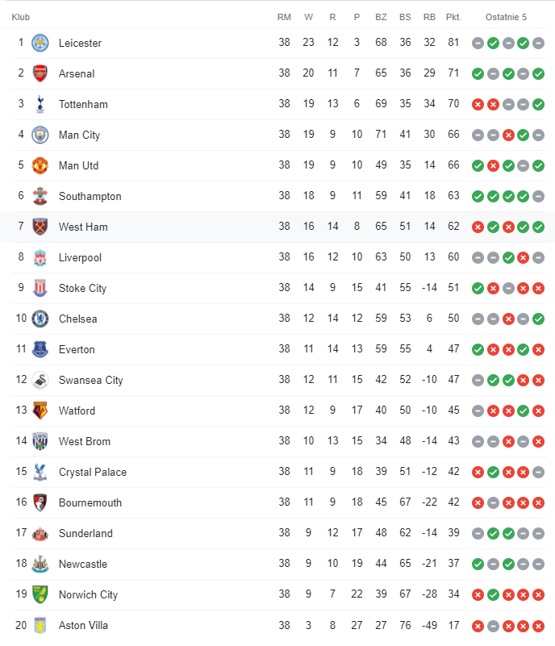

Sezon 2015/2016


Strona główna
1. Ranking najwięcej zdobytych mistrzostw Anglii
2. Najlepsi strzelcy w historii mistrzostw Anglii
3. Sezon 2019/2020
4. Sezon 2018/2019
5. Sezon 2017/2018
6. Sezon 2016/2017
7. Sezon 2015/2016
8. Sezon 2014/2015
9.Sezon 2013/2014
10.Sezon 2012/2013
Tabela sezonu 2015/2016
Najlepsi strzelcy
| Lp. | Zawodnik | Gole | Klub | Mecze | Wiek | Narodowość |
| 1. |  Harry Kane Harry Kane | 25 |  | 38 | 22 |  Anglia Anglia |
| 2. |  Jamie Vardy Jamie Vardy | 24 |  | 36 | 29 | Anglia |
| 2. |  Sergio Agüero Sergio Agüero | 24 |  | 30 | 27 |  Argentyna Argentyna |
| 4. |  Romelu Lukaku Romelu Lukaku | 18 |  | 37 | 23 |  Belgia Belgia |
| 5. |  Riyad Mahrez Riyad Mahrez | 17 | | 37 | 25 |  Algieria Algieria |
 Mesut Ozil
Mesut Ozil
 Niemcy
Niemcy Christian Eriksen
Christian Eriksen Dania
Dania Dimitri Payet
Dimitri Payet
 Francja
Francja Dusan Tadic
Dusan Tadic
 Serbia
Serbia